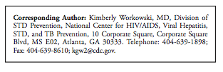

The term sexually transmitted diseases (STDs) is used to refer to a variety of clinical syndromes caused by pathogens that can be acquired and transmitted through sexual activity. Physicians and other health-care providers play a critical role in preventing and treating STDs. These guidelines for the treatment of STDs are intended to assist with that effort. Although these guidelines emphasize treatment, prevention strategies and diagnostic recommendations also are discussed.
These recommendations should be regarded as a source of clinical guidance and not prescriptive standards; health-care providers should always consider the clinical circumstances of each person in the context of local disease prevalence. They are applicable to various patient-care settings, including family- planning clinics, private physicians’ offices, managed care organizations, and other primary-care facilities. These guidelines focus on the treatment and counseling of individual patients and do not address other community services and interventions that are essential to STD/human immunodeficiency virus (HIV) prevention efforts.
